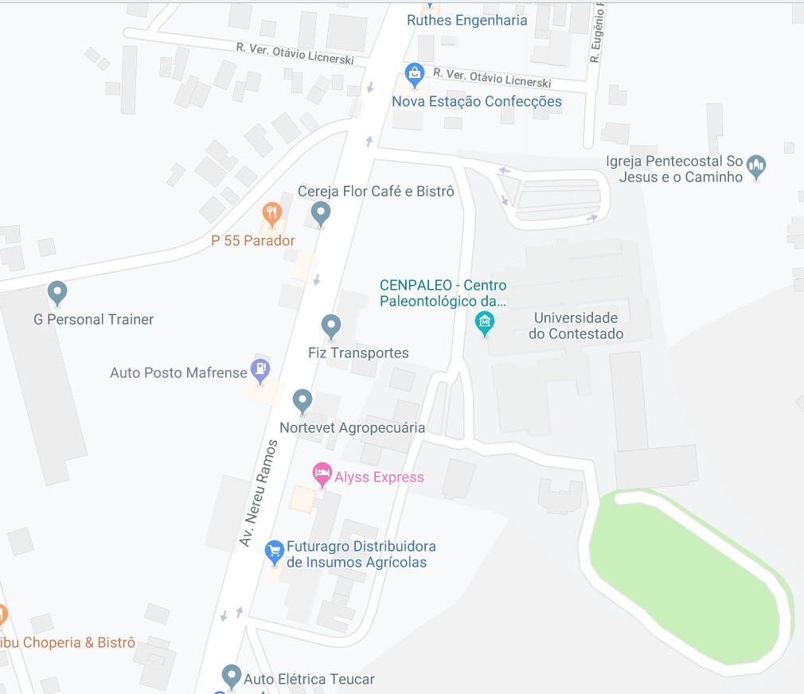

<ion-toolbar color="secondary">
	<ion-buttons slot="start">
		<ion-menu-button menu="first"></ion-menu-button>
	</ion-buttons>
	<ion-title>Mapa de Chamados</ion-title>
</ion-toolbar>
<ion-content>
	
	<ion-fab vertical="bottom" horizontal="end" slot="fixed" (click)="newChamado()">
		<ion-fab-button>
			<ion-icon name="add"></ion-icon>
		</ion-fab-button>
	</ion-fab>
</ion-content>